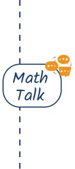

- 1.Which is greater: (a - b) or (b - a) ? Justify your answer.

- 2.Express 100 as the difference of two squares.
- 3.Find 406 , 72 , 145 , 1097 , and 124 using the identities you have
learnt so far.
- 4.Do Patterns 1 and 2 hold only for counting numbers? Do they
hold for negative integers as well? What about fractions? Justify your answer.